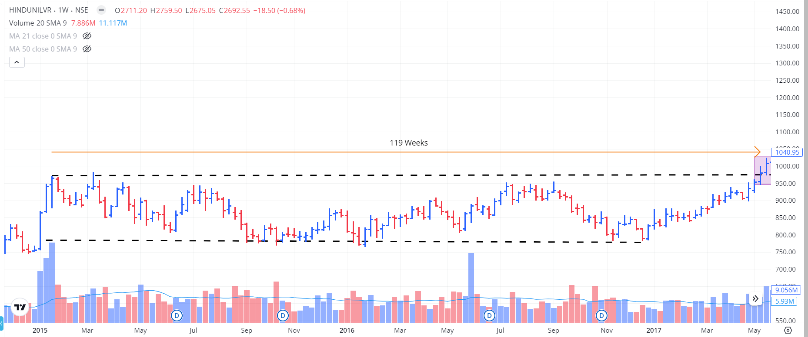

What is it all about?

Cracking the Code: Horizontal Line Breakout Trading
Hey there! Today, we're diving into one of the simplest yet most effective trading strategies out there: horizontal line breakout trading. This method is all about spotting key price levels and catching the action when the price breaks through. Whether you're just starting or have been in the game for a while, mastering this technique can seriously up your trading game.
What’s a Horizontal Line Breakout Anyway?
It's pretty straightforward. A breakout happens when the price of a stock or any other asset breaks through a significant level where it’s been hanging around for a while — like a ceiling (resistance) or a floor (support). When the price finally busts through, it often signals a new trend.
Focusing on Long – Horizontal Breakouts only, i.e., a breakout above a resistance:
The above picture is of HINDUSTAN UNILEVER from Mar 2015 to May 2017. The stock consolidated for 119 trading weeks! The pink box shows the candle breaking the resistance around ₹975, closing above it.
The Aftermath of a Breakout
Let’s say we bought the stock at the closing just above the breakout — ₹1000.

Woah, isn’t that something! The stock just shot up through the roof. I won’t comment on exact returns as the outcome also depends on the exit price.
The Exit Dilemma
While the entry is well-defined technically, the exit isn’t. Most breakouts are from all-time highs (ATH), meaning there are no prior resistance levels. This makes exits subjective — a key challenge we’ll dive into later.
Navigating Fakeouts: The Trap to Avoid
Fakeouts are false breakouts — where the price breaks a key level and quickly reverses. Here's why they happen and how to avoid them:
Why Fakeouts Happen:
- Market Manipulation: Larger players may trigger breakouts to trap traders.
- Lack of Volume: Breakouts with low volume usually lack conviction.
- Market Sentiment: Temporary hype can cause a quick but unsustained breakout.
How to Spot and Avoid Fakeouts:
- Volume Confirmation: A real breakout usually comes with a surge in volume.
- Wait for the Close: Only enter after the candle closes above the level.
- Use Multiple Time Frames: Higher timeframes like daily or weekly are more reliable.
- Set a Tight Stop-Loss: Limit risk by placing a stop just below breakout level.
- Longer Consolidation = Stronger Breakout: Prefer longer ranges like 1 year over 2 months.
Fakeouts are inevitable, but good habits and risk management help protect your capital.
How to Play the Breakout
- Jump In: Once the price closes above resistance, it's go time.
- Set Your Stop: Place a stop-loss just below breakout — ideally 2–5% max depending on your size.
Watch Out for These Traps
- False Breakouts: Quick reversals post-breakout — take your loss and move on.
- Overtrading: Don’t jump on every breakout. Be selective.
- Ignoring Market Trend: A breakout against overall market trend is weaker.
What's Next?
We still need to answer two questions:
- How to actually find these stocks?
- When to sell?
This blog’s already pretty long, so I’ll tackle those in the next part. You can read it here. See you in the next blog!